Практичний досвід · журнал «ДентАрт» 2016 №3
Міждисциплінарна стоматологічна реабілітація
INTERDISCIPLINARY DENTAL REHABILITATION
Застосування імплантації при тотальних функціонально-естетичних реабілітаціях часто є єдино можливим методом заміщення втрачених зубів, але, як і раніше, при недостатньо грамотно і ретельно спланованому лікуванні певною мірою непередбачуваним. Помилки на етапі діагностики та планування можуть коштувати дуже дорого і пацієнтові, і лікареві.
Актуальність статті пов'язана зі зростаючою кількістю встановлюваних імплантатів — необхідністю, яку відчувають молоді ортопеди та імплантологи, замінюючи скомпрометовані зуби імплантатами або встановлюючи імплантати в зоні адентії, компенсуючи практично кожен втрачений зуб. Безумовно, імплантація — це унікальний метод функціонально-естетичного відновлення. У нас є можливості, перевірені часом і підтверджені наукою, які дозволяють створювати усмішки практично з нічого, маючи певні знання і навички.
Але шлях такої реабілітації часто довгий і тернистий. Швидке і успішне, на перший погляд, лікування може перерости в серйозну багаторічну проблему як для пацієнта, так і для команди лікарів, відповідальних за лікування. Як відомо, виправляти помилки набагато складніше, ніж починати роботу спочатку, навіть у початково складній ситуації. Безумовно, помилки є у всіх, крім тих, хто нічого не робить, питання лише у відсотку помилок і можливості їх виправити.
Клінічний випадок
Пацієнтка звернулася до нас у 2011 році з приводу незадовільного вигляду своїх зубів і з бажанням замінити мостовидні конструкції, встановлені понад 12 років тому. Хотілося б зазначити, що пацієнтка була мотивована на лікування в нашій клініці, бо на консультацію її привела донька, котра лікується і спостерігається у нашій клініці з 2006 року. Зазвичай у таких пацієнтів уже сформовано довіру, що полегшує планування лікування та інформовану згоду пацієнта на майбутню комплексну реабілітацію.
Повний цикл консультації включає фотореєстрацію, виготовлення діагностичних моделей, функціональну діагностику і комп'ютерну томографію. Ґрунтуючись на отриманих даних, з огляду на побажання пацієнта поліпшити естетику усмішки, ми склали оптимальний і, наскільки можливо, мінімально інвазивний план мультидисциплінарної реабілітації (фото 1-5).
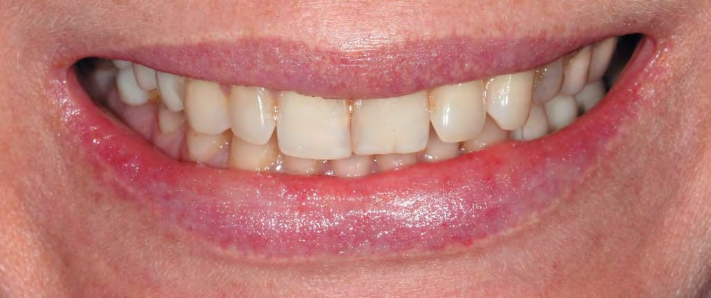
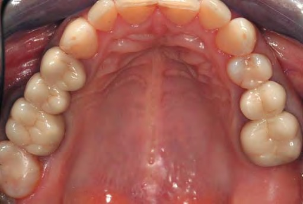
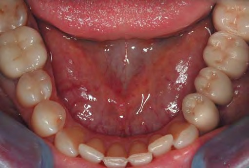
План лікування у 2011 році передбачав такі етапи:
1. Терапевтичний етап:
- професійна гігієна порожнини рота;
- ендодонтичне лікування і постендодонтичне відновлення зубів 14, 16, 34, 37, 46.
2. Хірургічний етап I:
- видалення зубів 18, 47 із встановленням імплантатів у зоні зубів 15, 27, 35, 36, 47;
- спрямована тканинна регенерація (СТР) і спрямована кісткова регенерація (СКР).
3. Хірургічний етап II:
- вестибулопластика в зоні зубів 35 і 36.
4. Ортопедичний етап:
- протезування зубів та імплантатів на верхній щелепі і нижній щелепі.
Наш стандартний протокол при виконанні тотальних робіт передбачає остаточне прийняття рішень тільки після зняття ортопедичних конструкцій, про що ми попереджаємо пацієнтів заздалегідь. Тому в цьому випадку ендодонтичне лікування зубів 25 і 26 первинно не планувалося, оскільки видимих клінічних показань або даних комп'ютерної томографії не було. У зоні зубів 35 і 36 потрібне незначне збільшення гребеня по горизонталі, яке можна було виконати одночасно з установкою імплантатів, не збільшуючи терміни остеоінтеграції.
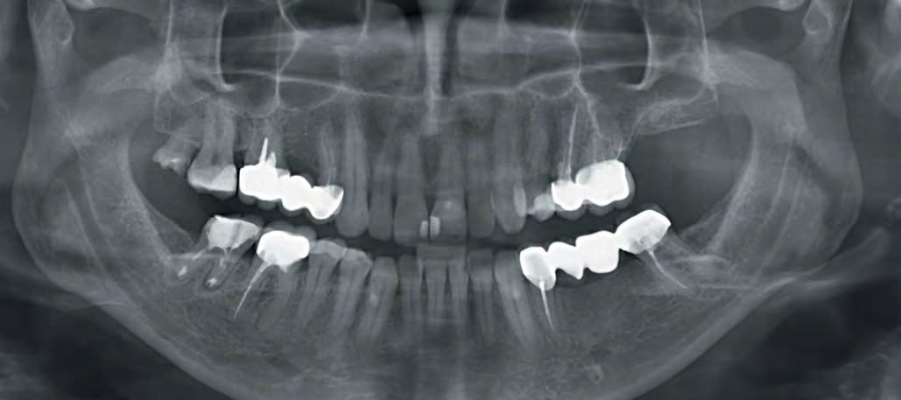
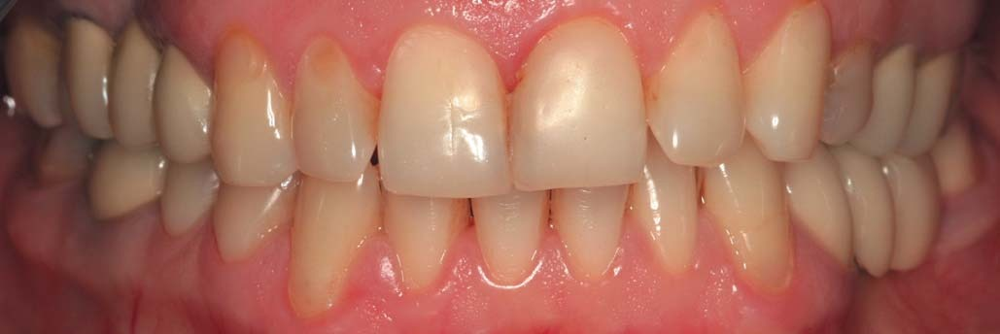
Ми планували виконати все лікування за 6 місяців: 2 тижні для терапевтичної підготовки, перший хірургічний етап з подальшим післяопераційним періодом близько 3 місяців, другий хірургічний етап, що включає операцію вестибулопластики з подальшим післяопераційним періодом, — близько місяця і 1,5 місяця на всі ортопедичні етапи. Такий підхід дозволяє виконувати роботу в плановому спокійному режимі, зручному для пацієнта і команди лікарів.
Пацієнтці для прийняття зваженого рішення знадобилися довгих два роки, і вона знову звернулася до нас у 2013 році. У 2013 році всі діагностичні заходи були виконані повторно, оскільки за цей час у порожнині рота пацієнтки відбулися значні зміни порівняно із ситуацією дворічної давнини. З її слів, вона вирішила заощадити і звернулася в іншу клініку за рекомендацією. Два роки проходила лікування, але до естетичної корекції усмішки за допомогою вінірів, про яку мріяла, справа не дійшла. Усе зупинилося на етапі імплантації (фото 6-12).
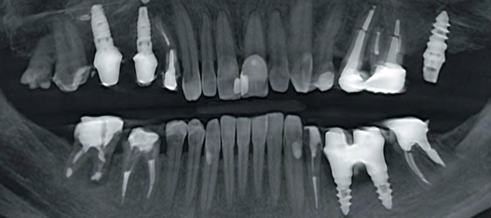
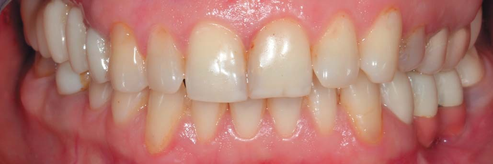
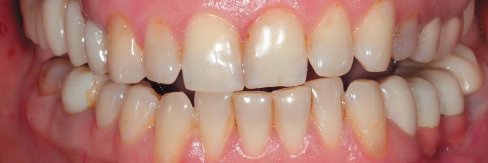
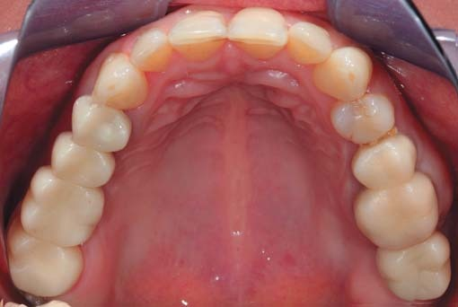
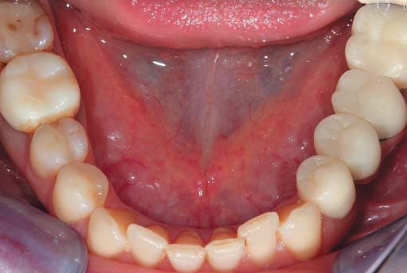
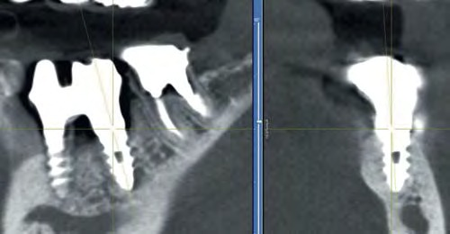
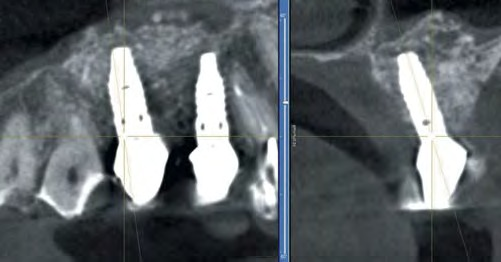
Найскладнішою для фахівців іншої клініки виявилася проста ділянка адентії в зоні зубів 35 і 36 (фото 11-13). Пацієнтка мала в цьому сегменті кілька операцій з перевстановлення імплантатів та реконструкції альвеолярного гребеня, в результаті яких було втрачено об'єм кістки по висоті понад 6 мм. Також через не відому нам причину було видалено зуб 16, який спочатку ми планували зберегти.
Але найбільш нелогічним, на нашу думку, було рішення зберегти зуби 18 і 47. Зуб 18 з діагнозом періодонтит, який ми поставили 2 роки тому, був наполовину зруйнований і не мав антагоніста, зуб 47 з таким самим діагнозом мав резорбовані наполовину корені. Чому при плануванні такої масштабної роботи прості і логічні показання до видалення не були враховані, ми можемо тільки здогадуватися.
Пацієнтка була розгублена, їй, безумовно, було некомфортно, передусім психологічно, звертатися до нас знову. Однак вона наполягала, щоб усі необхідні етапи було виконано без компромісів. Планування лікування виконувалося з урахуванням усієї виконаної роботи. Однак ендодонтичне переліковування зубів 14, 37, 34, 46 з урахуванням усіх діагностичних даних нам довелося робити повторно. У ситуації із зубами 25 і 26, в яких були встановлені масивні литі куксові вкладки, вилучення яких могло призвести до втрати зубів, було прийнято рішення не виконувати повторне ендодонтичне лікування.
Новий план лікування від 2013 року був таким:
1. Терапевтичний етап:
- професійна гігієна;
- ендодонтичне лікування і постендодонтичне відновлення зубів 14, 34, 37, 46.
2. Хірургічний етап I:
- видалення імплантатів в зоні зубів 27, 35, 36, зубів 18, 47;
- встановлення імплантата в зоні зуба 27 і закритий синус-ліфтинг;
- негайне встановлення імплантата в зоні зуба 47;
- спрямована тканинна регенерація (СТР) і спрямована кісткова регенерація (СКР);
- об'ємна реконструкція альвеолярного гребеня в зоні зубів 35, 36.
3. Ортопедичний етап I (через 3 місяці):
- протезування зубів та імплантатів на верхній щелепі.
4. Хірургічний етап II:
- встановлення імплантатів в зоні зубів 35, 36 і вестибулопластика на нижній щелепі ліворуч.
5. Ортопедичний етап II:
- протезування зубів та імплантатів на нижній щелепі, крім зубів 34, 37 та імплантатів 35, 36.
6. Ортопедичний етап III:
- протезування зубів 34 і 37 та імплантатів 35 і 36.
Найскладніше в цій роботі було подолати пригнічений психологічний стан пацієнтки і налаштувати її на кілька оперативних втручань під седацією, прийом антибіотиків і т.д. Ще одна складність полягала в багатоетапності роботи. Останній завершальний етап в зоні зубів нижньої щелепи ліворуч відставав у термінах остеоінтеграції щодо всіх інших етапів з об'єктивних причин. Але в клініці «Naturelle» вже давно запроваджено протокол швидкого якісного протезування, який не «краде» часу у пацієнтів за рахунок відставання якогось етапу. Ми спокійно відновлюємо готові до протезування ділянки, а етап, який «відстає», підлаштовуємо під загальну концепцію всієї функціонально-естетичної реабілітації, забезпечуючи пацієнта належними тимчасовими конструкціями.
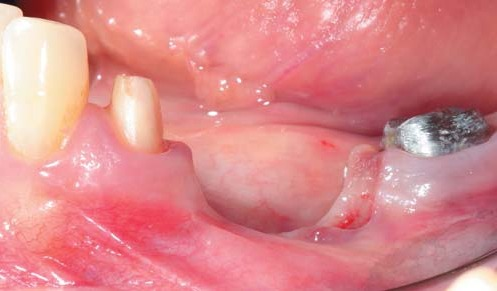
Тепер трохи докладніше про хірургічний та ортопедичний етапи лікування. Безпосередньо перед хірургічним етапом був отриманий відбиток з попередньо підготованих зубів 34 і 37 для виготовлення металопластмасової тимчасової конструкції з опорою на зуби 34, 37 для тривалого носіння. До моменту хірургічного втручання тимчасова конструкція була готова.
Під час цього хірургічного етапу ми виконали за одне відвідування:
- видалення зубів 18, 47 з негайною імплантацією в зоні зуба 47 + СТР + СКР;
- видалення імплантатів в зоні зуба 27 з одночасним встановленням імплантата і закритим синус-ліфтингом;
- видалення імплантатів в зоні зубів 35, 36 з одночасною об'ємною реконструкцією, спрямованою на збільшення об'єму альвеолярного гребеня по висоті і ширині (фото 13-20).
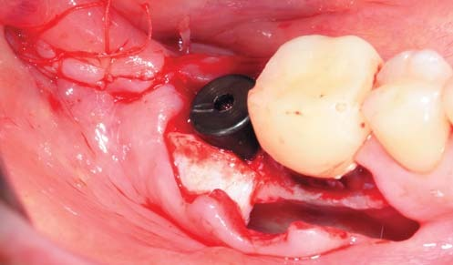
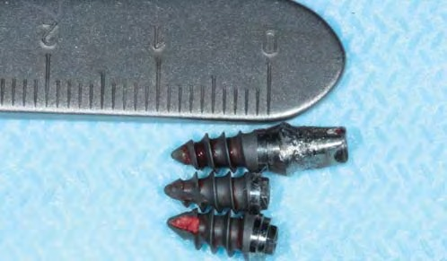
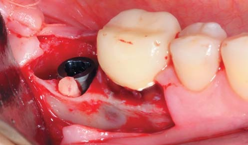
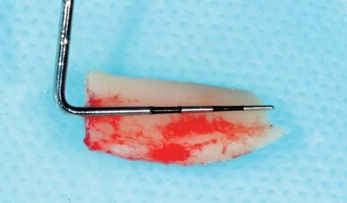
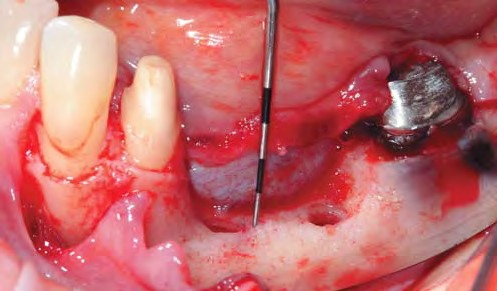
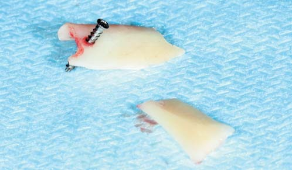
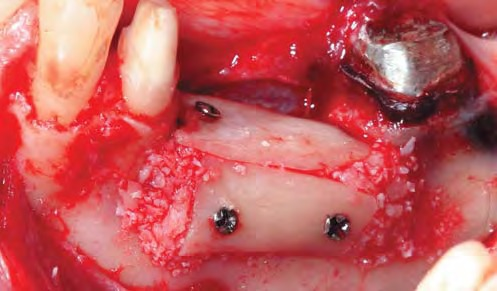
Об'ємна реконструкція виконувалася за допомогою аутогенних розщеплених кісткових блоків, отриманих із зовнішньої косої лінії на нижній щелепі. Простір під розщепленими блоками заповнювався сумішшю зі стружки аутокістки і ксеногенного матеріалу приблизно у співвідношенні 1:1 (фото 17-20). Дуже важливо виконати кілька моментів: стабілізувати блоки, щільно упакувати стружку і без натягу зашити рану. Цей метод ми використовуємо понад 5 років, і він зарекомендував себе у подібних ситуаціях як надійний спосіб відновлення великих обсягів втраченої кістки. Через 10 днів зняли шви.
Наступний візит був призначений через 3 місяці, планувалося підготувати до протезування зуби та імплантати на верхній щелепі. 3 місяці — більш ніж достатній термін для навантаження імплантата в зоні зуба 27, навіть після закритого синус-ліфтингу, з огляду на отриманий торк у 45 Н/см² і об'єм утримуваної кістки понад 5 мм.
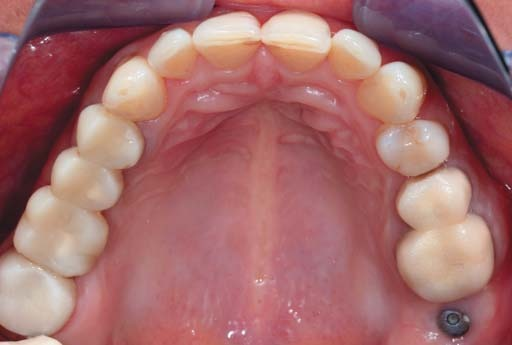
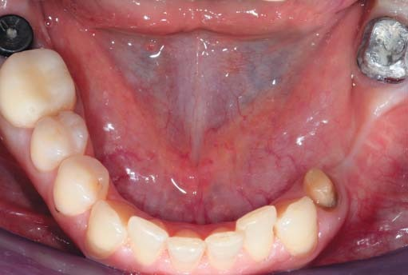
Перед препаруванням зроблене воскове моделювання з корекцією зеніту зубів 11, 12, 13, 14, 24, 25. Під час препарування в цей візит була виконана електрокоагуляція ясенного краю (фото 23-25) згідно з проектом на гіпсовій моделі, отримані відбитки і виготовлена безпосередньо в порожнині рота пряма тимчасова конструкція, яка не знімається до наступного візиту (фото 26). Через два дні робиться заміна тимчасових конструкцій першого порядку (прямий метод) на лабораторні тимчасові конструкції другого порядку (непрямий метод) (фото 27).
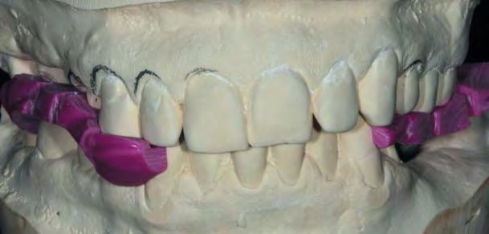
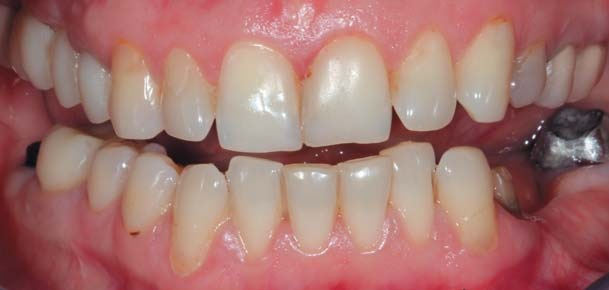
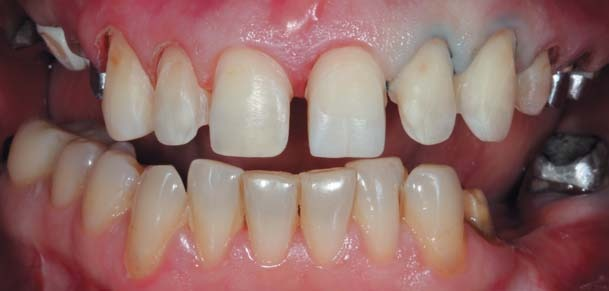
При тотальній реабілітації це стандартний клінічний протокол, який має відразу кілька цілей. По-перше, пасивність впливу на кукси зубів, точність прилягання, якість полірування всієї тимчасової конструкції, виконаної на робочій моделі, можна порівняти з такими ж критеріями постійних конструкцій, проте тимчасова конструкція повинна бути цільною — для надійного і стабільного утримання куксою відпрепарованих зубів. По-друге, ми можемо виконати остаточну корекцію форми лабораторних тимчасових конструкцій у ротовій порожнині відразу ж після встановлення, без анестезії, що дуже важливо для лікаря і пацієнта на етапі обговорення. Досягнутий результат протоколюється за допомогою фотореєстрації, альгінатних відбитків для виготовлення робочих моделей і силіконових ключів, що дає можливість отримати точну копію затвердженої форми в керамічних реставраціях.
Наше рішення надати більшої жіночності усмішці за рахунок заокруглення форми фронтальних зубів при примірці в ротовій порожнині показало свою неспроможність (фото 26), і ми вибрали кутастішу форму зубів, яка більш гармонійно і правильно поєднувалася з рисами обличчя пацієнтки (фото 27). Найчастіше рекомендовано враховувати форму зубів до препарування, коли чітко видно загальні тенденції форми зубів (фото 1, 5, 7, 8).
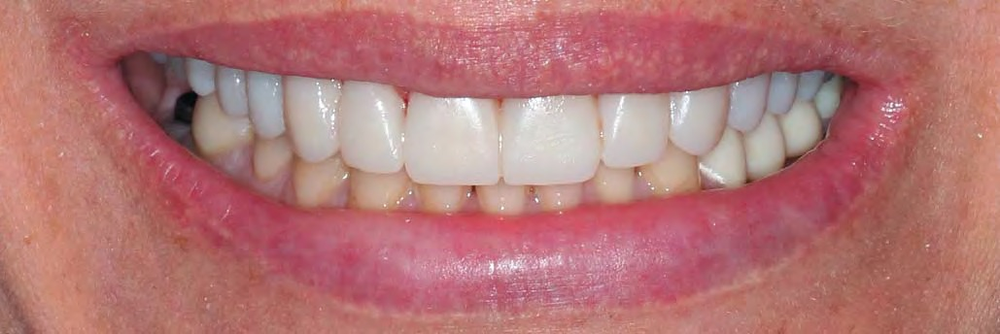
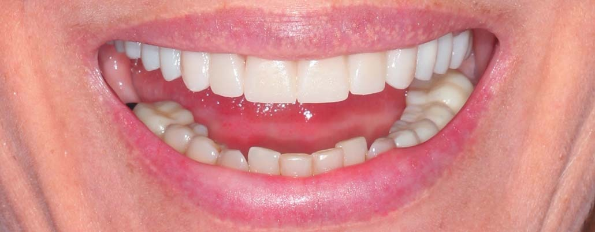
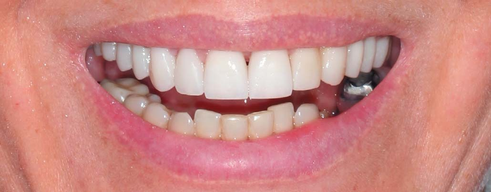
Через два тижні можна виконати примірювання керамічних реставрацій без глазурі, мета якого — підтвердити точно відтворену форму тимчасових затверджених реставрацій і остаточно визначитися з фінальним кольором керамічної конструкції (фото 28). На зуби 15-21 встановлено керамічні вініри, на зубах 22-27 залишаються тимчасові реставрації. На цьому прийомі робиться корекція керамічних вінірів згідно із затвердженою формою тимчасових реставрацій.
Виходячи з багаторічного досвіду, рекомендуємо виконувати керамічну реставрацію приблизно на тон світліше планованого кольору. Особливо це правило стосується реставрацій (вініри, коронки) передніх зубів, оскільки завжди можна зробити відтінок теплішим при фінальній корекції, але абсолютно неможливо зробити його світлішим.
Через два дні після примірювання робота була зафіксована. Максимум через тиждень після фіксації (фото 29) видно, що м'які тканини в зоні реставрацій на верхніх зубах ще не прийшли в норму. Далі було виконано препарування зубів на нижній щелепі, крім зубів 34 і 37, отримано робочий відбиток для виготовлення фінальних реставрацій. Цей період дуже важливий для адаптації оклюзійних співвідношень, оскільки через еластичну тимчасову конструкцію на нижній щелепі скол кераміки на верхній щелепі неможливий.
За два тижні виготовлення керамічних реставрацій на зубах та імплантатах нижньої щелепи відбувається повна адаптація оклюзії, і під час примірювання керамічних реставрацій на нижній щелепі робиться повторна реєстрація оклюзії для фінальної корекції (фото 29-31). Таким чином, після фіксації на нижніх зубах та імплантаті в зоні зуба 47 керамічні конструкції практично не пришліфовувалися, і ймовірні відколи в майбутньому були зведені до мінімуму.
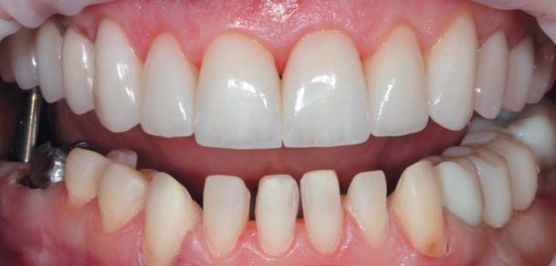
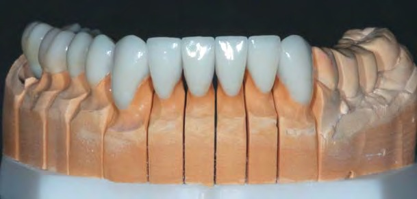
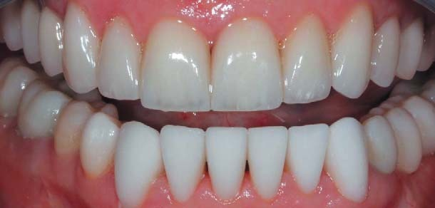
Ще через місяць було встановлено імплантати в зоні зубів 35, 36 з додатковою підсадкою вільного сполучно-тканинного трансплантата для збільшення обсягу кератинізованих ясен, які захищають кістку в зоні з'єднання імплантат — абатмент від резорбції (фото 32, 33). Це один з найважливіших факторів захисту, що впливають на стабільність кістки в зоні імплантатів під час функціонального навантаження, — обсяг зони кератинізованих прикріплених ясен (фото 32-37).
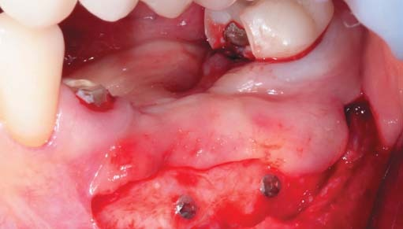
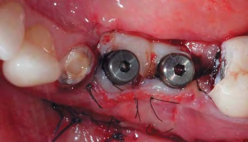
У зоні зубів 35 і 36 були обрані імплантати з полірованою шийкою, оскільки вони рекомендовані при вертикальних дефектах кістки і в зонах підсадок (як у цьому випадку) у пацієнтів з обтяженим статусом пародонту (фото 39). У зоні зубів 27 і 37 використовувалися імплантати з мікрорізьбою на ділянці шийки імплантата, яка чудово працює в усіх інших випадках і служить для стабілізації кістки в цій зоні. Така стабільність кістки підтверджується на прицільних рентгенограмах, виконаних через 2 роки після функціонального навантаження на імплантати (фото 38-40).
У нас є позитивний досвід спостереження при застосуванні такої тактики втручань за більш ніж 12-річну експлуатацію подібних конструкцій. Звичайно, такий результат неможливо отримати, виконавши бездоганно лише хірургічний протокол. Імплантат проходить дві «стадії життя» — хірургічну та ортопедичну. І за ідеальної хірургії на етапі протезування дуже легко втратити остеоінтегрований імплантат у найкоротші терміни. Тому до протезування на імплантатах потрібно підходити із ще більшою відповідальністю, оскільки стоматолог-ортопед частково несе відповідальність за результативність лікування і хірурга-імплантолога, і зубного техніка.
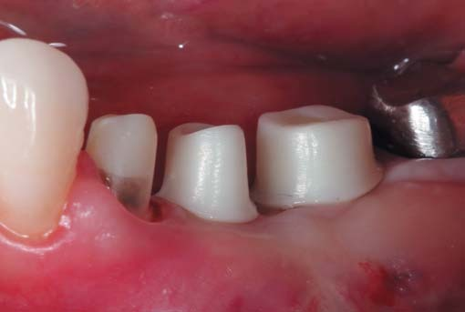
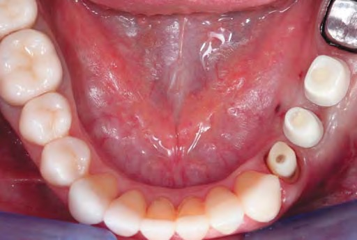
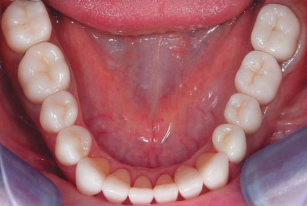
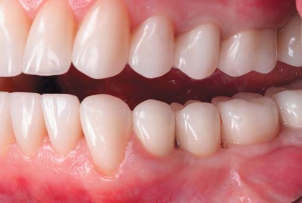
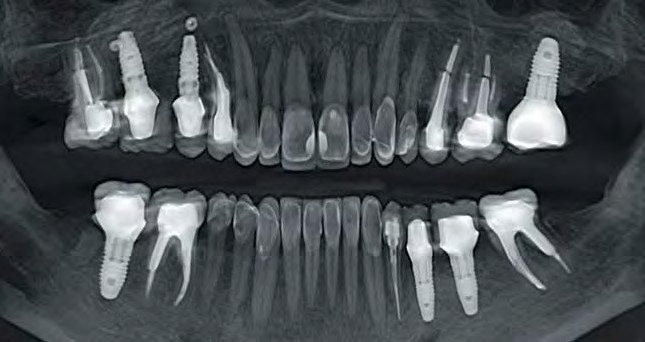
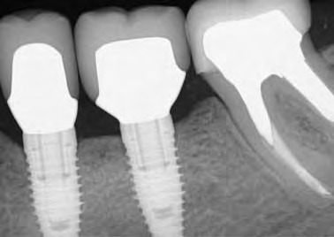
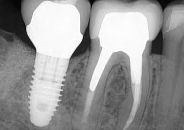
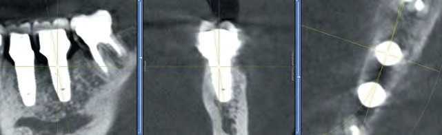
Тому в протезуванні ми є прихильниками оригінальних компонентів і аксесуарів до системи імплантатів, яку використовуємо (фото 34-43). Відразу після операції на нижній щелепі ліворуч було встановлено відкоригований тимчасовий мостовидний протез, і вже через 3 тижні отримано робочий відбиток із зубів та імплантатів в зоні зубів 34, 35, 36, 37. Фінальний етап полягав у фіксації тільки чотирьох відсутніх реставрацій, які легко інтегрувалися в загальну гармонійну картину.
Повна реабілітація була виконана протягом 1 року до весни 2014. Через складні події в країні роботу багато разів доводилося переносити з відомих причин. Останні фото і рентгенограми виконані влітку 2016 року, через 2 роки функціонального навантаження. Можна констатувати чудову біоінтеграцію керамічних реставрацій на зубах та імплантатах (фото 36-43).
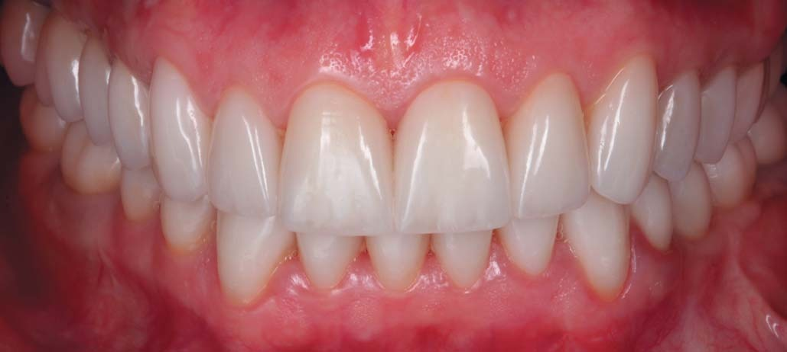
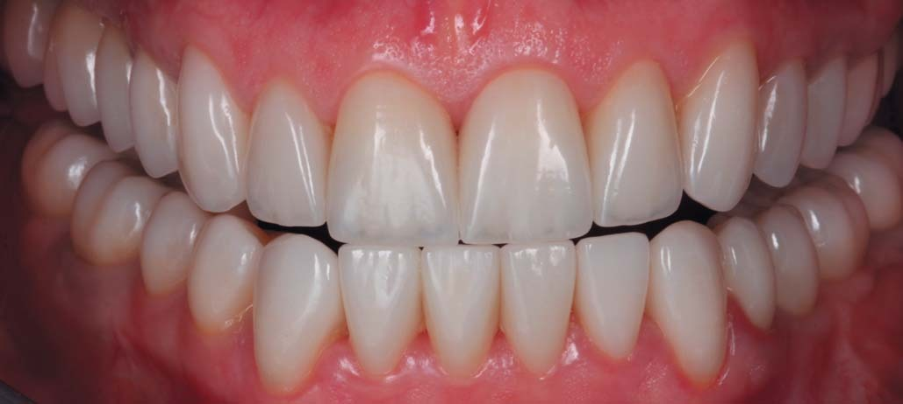
Висновки
Проаналізований клінічний випадок є прикладом злагодженої роботи і високого професіоналізму команди фахівців: хірург-імплантолог — Андрій Гук, ендодонтист — Христина Сидорак, зубний технік — Павло Солтис, протезування — Максим Лєснухін.
У нашій клініці ми надаємо перевагу зубозберігаючим технікам. Але іноді видалення зуба — це вирок, який є єдиним способом усунути проблему запалення. Безумовно, альтернативні варіанти заміщення, такі як мостовидні конструкції, можуть застосовуватися за умови, що опорні зуби підходять за показаннями і вже були покриті коронками. Препарування інтактних зубів під мостоподібні конструкції є неправильною тактикою. У цьому випадку після видалення ми вдаємося до імплантації як єдино правильного методу заміщення втрачених зубів.
Імплантація та протезування на імплантатах — надійний і перевірений метод відновлення зубів у руках професіоналів. Однак помилки, допущені на етапі діагностики та планування, можуть коштувати дуже дорого і для пацієнта, і для лікаря. Тому саме до цих етапів у клініці «Naturelle» підходять з максимальною ретельністю. Поданий клінічний випадок демонструє це дуже наочно.
За подібні тотальні реабілітації необхідно братися фахівцям, які мають достатній досвід і успішну статистику при роботі з імплантатами. Команда фахівців зобов'язана зважити всі ризики при будь-якій, навіть найпростішій імплантації. У випадках, коли завдання не під силу, лікар повинен мати сміливість делегувати пацієнта у спеціалізовані центри, де працюють над подібними проблемами.